Nama Aplikasi: OffLink
Target Pengguna: Orang yang ingin melakukan panggilan suara grup dalam jaringan WiFi yang sama
Tanggal Dibuat: 9 Maret 2026
Terakhir Diperbarui: 11 April 2026
OffLink adalah aplikasi yang memungkinkan Anda melakukan panggilan suara grup tanpa Internet dalam lingkungan WiFi / tethering yang sama. Menggunakan komunikasi P2P melalui WebRTC untuk menghasilkan panggilan suara dengan latensi rendah.
Contoh Skenario Penggunaan:
Layar utama setelah aplikasi diluncurkan.
OffLink bekerja dalam mode WiFi LAN. Semua orang terhubung ke jaringan WiFi yang sama untuk melakukan panggilan.
Catatan: Koneksi internet tidak diperlukan.
| Peran | Perangkat yang Didukung | Keterangan |
|---|---|---|
| Host | Android / iPhone | Perangkat yang mengelola panggilan |
| Guest | Android / iPhone | Perangkat yang bergabung ke panggilan |
Perhatian: Semua orang harus terhubung ke jaringan WiFi yang sama.
| Izin | Kegunaan | Dampak Jika Ditolak |
|---|---|---|
| Mikrofon | Panggilan suara | Tidak dapat melakukan panggilan |
| Kamera | Pemindaian kode QR | Tidak dapat mendaftarkan grup via QR |
| Perangkat Terdekat (WiFi) ※Android | Deteksi jaringan WiFi | Tidak dapat mendeteksi Host |
| Lokasi ※Android | Pemindaian WiFi (persyaratan OS) | Tidak dapat mendapatkan SSID WiFi |
| Bluetooth ※Android | Koneksi headset | Tidak dapat menggunakan headset |
| Notifikasi ※Android | Notifikasi undangan panggilan | Tidak ada notifikasi latar belakang |
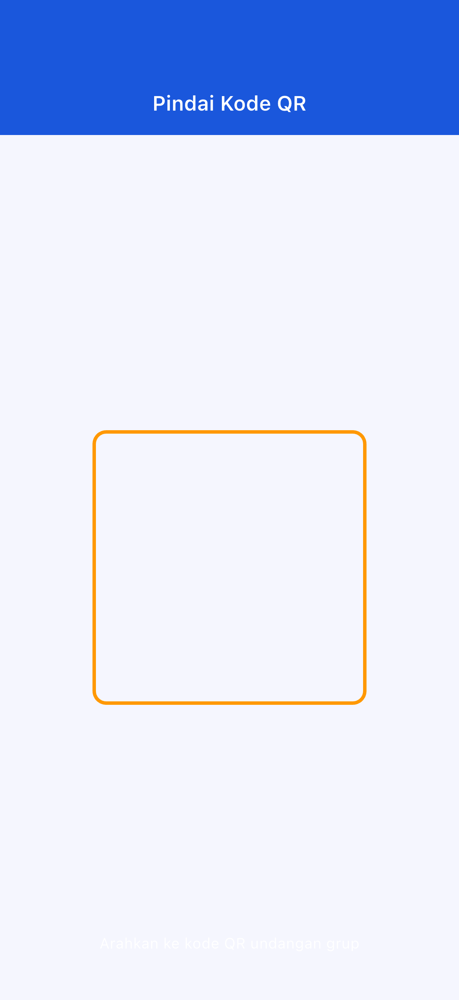
Jika izin ditolak: Buka "Pengaturan" → "Aplikasi" → "OffLink" untuk mengubah.
Langkah 1: Semua orang terhubung ke WiFi yang sama
Langkah 2: Ketuk "Panggil Sekarang" (tombol hijau)
Langkah 3: Masukkan nama pengguna
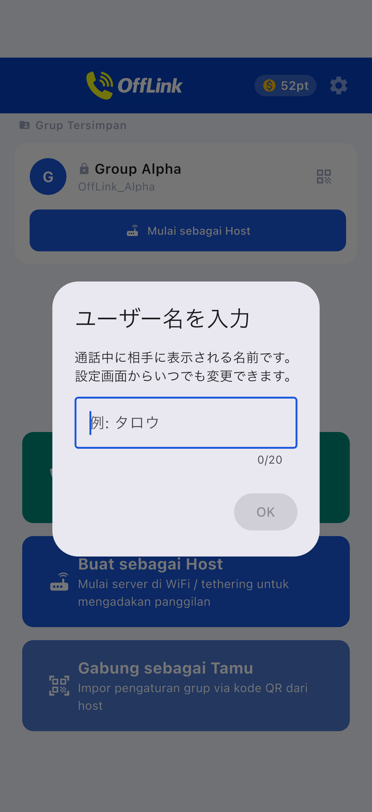
Langkah 4: Pilih tier dan mulai panggilan
Langkah 5: Notifikasi undangan panggilan akan dikirim otomatis ke anggota
Langkah 1: Ketuk "Buat sebagai Host" (tombol biru)
Langkah 2: Masukkan nama grup dan kata sandi lalu ketuk "Buat"

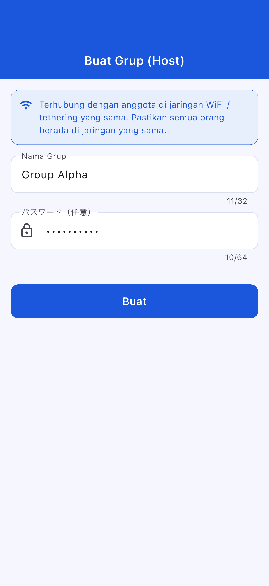
Langkah 3: Pilih tindakan pembuatan
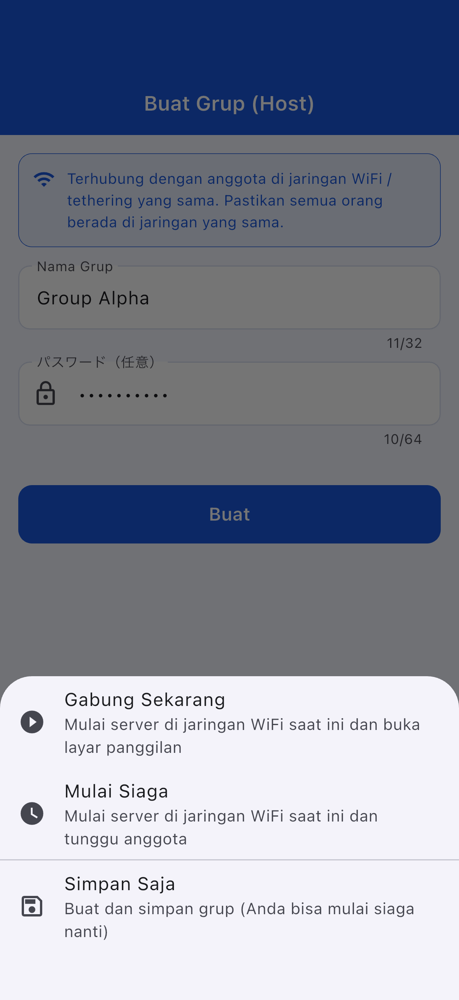
| Tindakan | Keterangan |
|---|---|
| Gabung Sekarang | Mulai server dan mulai panggilan |
| Mulai Siaga | Mulai server dan menunggu |
| Simpan Saja | Bisa dimulai nanti |
Langkah 1: Ketuk "Gabung sebagai Guest" (tombol biru muda)
Langkah 2: Pilih metode bergabung
| Metode | Operasi |
|---|---|
| 📱 Pindai kode QR | Pindai QR milik Host |
| 📋 Tempel kode | Tempel kode yang dibagikan |
| ✏️ Input manual | Masukkan langsung |
Berbagi kode QR (sisi Host):

Tempel kode (sisi Guest):
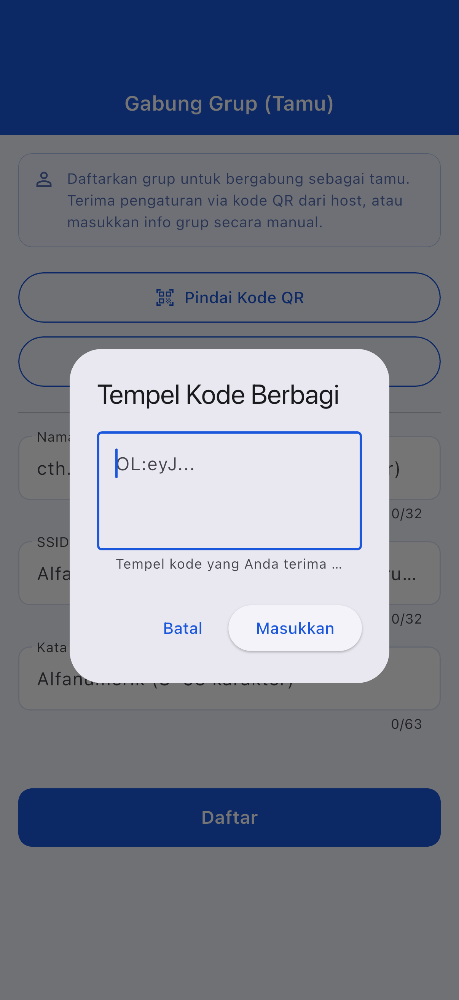
Langkah 3: Ketuk "Daftar"
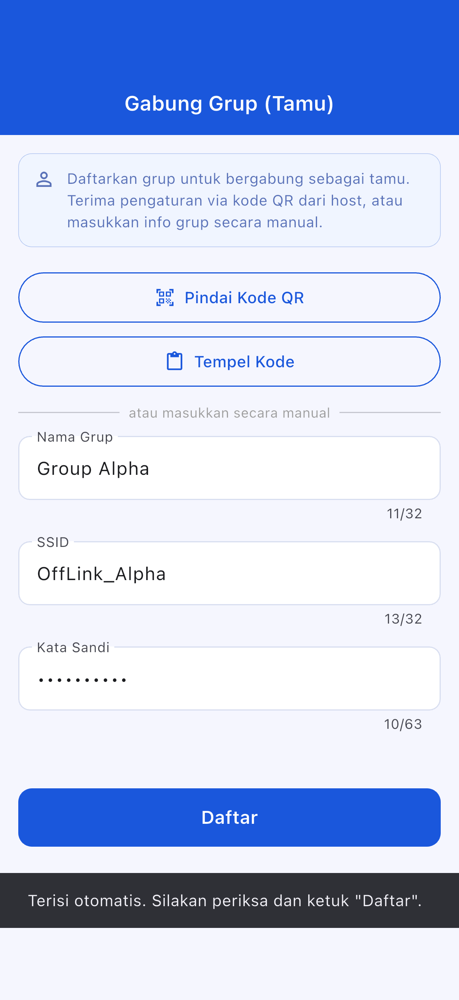
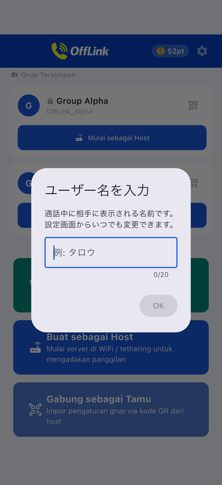
Layar bergabung Guest:
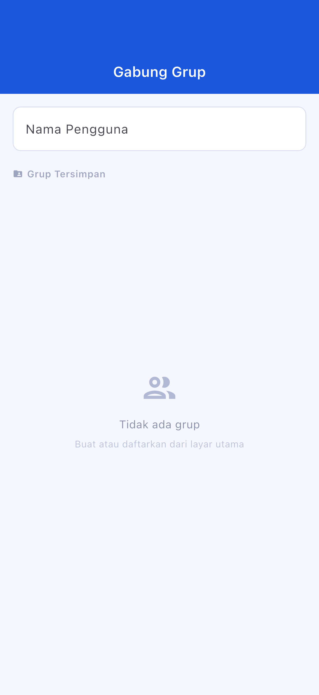
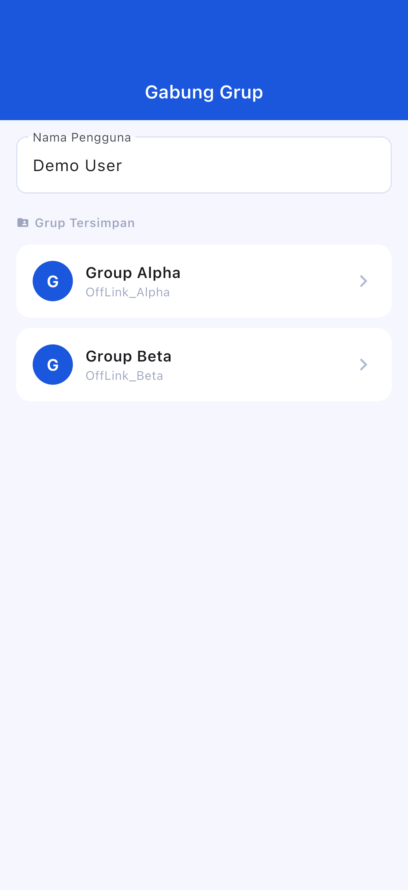
Layar siaga:
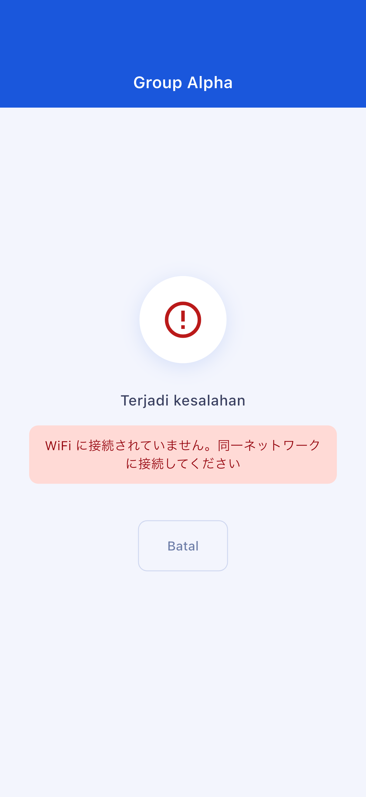
Layar panggilan:
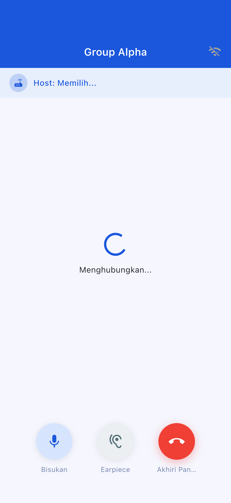
| Tombol | Fungsi |
|---|---|
| 🎤 Bisukan | Mikrofon hidup/mati |
| 🔊 Ganti output audio | Speaker / Bluetooth / Earpiece |
| 🔴 Akhiri panggilan | Keluar dari panggilan |
| Tier | Poin yang Digunakan | Peserta Maksimum |
|---|---|---|
| Standard | 10 pt | 4 orang |
| Large | 20 pt | 10 orang |
Tidak dapat diaktifkan otomatis dari dalam OffLink. Atur secara manual.
Buka "Pengaturan" → "Aplikasi" → "OffLink" → "Izin" untuk mengubah
| Item | Isi Batasan |
|---|---|
| Peserta maksimum | Standard: 4 / Large: 10 |
| Metode panggilan | Hanya WiFi LAN |
| Latar belakang | Terbatas tergantung perangkat |
| Batas penyimpanan grup | Free: 5 / Premium: Tidak terbatas |
| Item | Rekomendasi |
|---|---|
| Android | 5.0+ (API 21+) |
| iOS | 13.0+ |
| Baterai | Disarankan 80% ke atas |
| Penyimpanan | 100MB ke atas |
| WiFi | Router / Tethering / WiFi portabel |